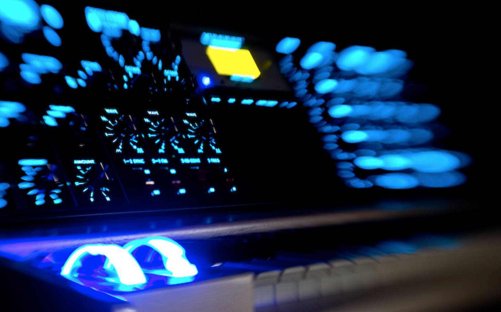
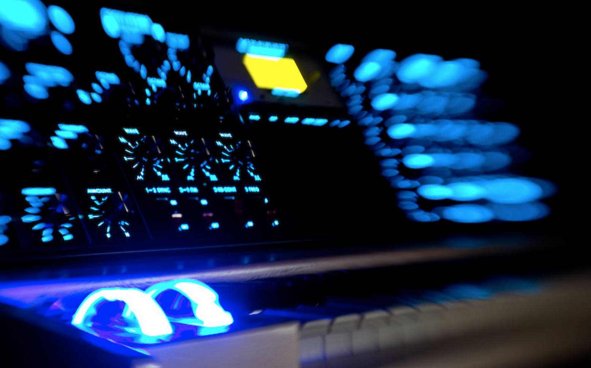

Warp MIDI Sequencer
Warp is a new music-theory-aware MIDI sequencer for software and hardware synthesizers, designed for composition and dynamic live performance.
Warp is inspired by some of our favorite tools such as Ableton Live, the Sequentix Cirklon, and the Elektron Monomachine. Like Ableton, Warp is grid based, yet instead of using a piano roll, patterns are simply typed in. You will probably use Warp with your DAW open in the background, either recording audio or incoming MIDI from Warp.
Warp is open source (Apache 2 licensed), and built in Python. Warp has an emphasis on enabling selective randomness, choreographed key-changes, and emergent new musical frontiers through a powerful built-in transform language. You haven't seen anything like it.
 

Ready To Get Started?
This website contains extensive documentation that will teach you about Warp -- just explore the chapters on your left. We encourage you to reach out and share your stories, feature ideas, and music with us. For those about to rock - we salute you.
BitBucket | Twitter | Patreon | © Michael DeHaan, 2020